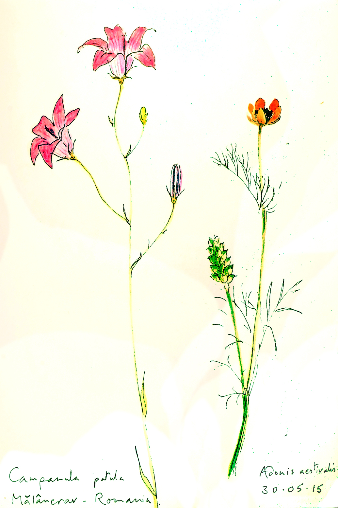
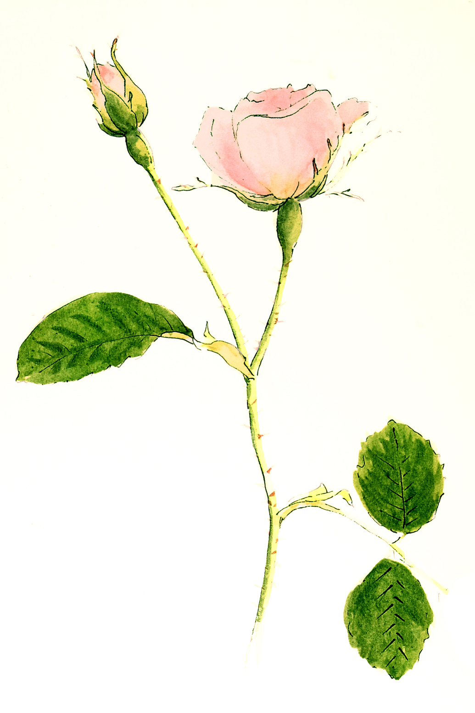

What our supporters have said
Simon Jenkins
Chairman of the National Trust (2008-2014)
An internationally recognised authority on architectural matters, he visited Transylvania in October 2009. On his return he made a note to the National Trust staff which is worth repetition, as it shows a great understanding of the character of our work from the perspective of an outside observer.

Simon Jenkins in Romania (2009)
Robin Lane Fox
English classicist, ancient historian, and gardening writer. He visited Transylvania in October 2017.
FLORAL TOURISM: ON THE TRAIL OF TRANSYLVANIA’S ELUSIVE CROCUS
On remote hillsides above ancient villages sacked by Romans, Tatars and Turks flourish the elusive blooms of crocus banaticus. In idyllic east European sunshine, I have been focusing on a crocus. It is not a purple or yellow-flowered hybrid, one of those Dutch fatties that city dwellers admire in spring. It is a lilac-flowered wild beauty, at home in Transylvania. Even in Romania, few realise the rare charm of its autumn flowers. It avoids main roads and towns, so I have had to ride to find it. I recommend this sort of floral tourism. Mine was aimed at crocus banaticus, the iris-flowered crocus which has three big outer petals. I first discovered its distinctive beauty in the Bulletin of the Alpine Garden Society, that seminal influence on the prose-style of the great travel writer Norman Lewis, as he once told me in his sitting room in Essex. About 40 years later, the same crocus was discovered in the same bulletin by Harriet Rix in Devon, my indomitable companion on our ride last year into the high floral meadows of Kyrgyzstan. While we put brave faces on the mountain storms, we discovered a shared love of this crocus and pledged in mares’ milk to find it in its Romanian home. She, not I, realised that it overlaps there with Patrick Leigh Fermor’s Between The Woods and The Water, the immortal tale of his walk from London to Istanbul. In summer 1934, the 19-year-old Leigh Fermor trod above our crocus, dormant in the Transylvanian grass, while he eloped with high-spirited Angéla, one of those “times when hours are more precious than diamonds”. Between the woods and the meadows, we might find gems which flowered in their wake. The crocus is named “banaticus” from early finds in the Banat, territory that became a bitter triangular contest between Hungary, Yugoslavia and Romania, until the Treaty of Versailles divided it between the latter two in 1919. The most recent reports of the flower are further east, so we began our hunt in the Transylvanian villages founded by German-speaking Saxons. In the 12th century, the offer of land and a tax-free life lured thousands of Saxons to migrate from the area of modern Luxembourg and settle in Transylvania. They strengthened the land’s defences and vitalised its crafts and crops, terracing the hillsides and growing apples and productive vines. Between 1980 and 1990, many migrated in reverse. They were sold by Ceausescu, no friend of village life, to the Kohl government in Germany who saw them as loyal voters. Before Ceausescu’s fall, up to 250,000 Saxons returned to take up German citizenship, leaving only a rump to maintain churches, crafts and houses. The basecamps for our adventures were Saxon houses restored since 1995 by the celebrated Mihai Eminescu trust. Its rentable properties range from double-fronted village houses to two fine manors at Richis and Malancrav with tempting libraries and rooms for up to nine guests. We began in the Saxon heartland of Viscri whose fortified church gives a special sense of orderly Saxon life. Social ranks and the sexes were segregated in the congregation. Unmarried young men were sent up to the gallery from where they could look down on the plaited hair and hollow black headdresses of the unmarried Saxon girls. Only outside the church was contact possible, on a grassy circle that served as a dance floor. Inside, painted panels show sunflowers and lilies of the valley, “ladders to heaven” in German tradition, among roses and reflexed lilies. I thought of the red roses and “tiger lilies” that Leigh Fermor’s beloved Angéla pushed into his buttonhole at the train station as they took their sad farewell. Of crocus banaticus, there was no sign. Evidence soon emerged. The main churches of the Saxon villages are Lutheran and in Brasov’s Black Cathedral, their choirs were to assemble and mark the 500th anniversary of the Reformation. As a noted soprano, Harriet was invited to join them and help with the higher notes. As a spectator with no religion, I was tagged with a wristband and allowed to watch from a front seat. While the choirs rehearsed, I researched the flower stalls of Brasov market and found two bunches of crocus banaticus on a flower-lady’s stall. She had no idea where they had been growing. After Luther’s setting of Psalm 118, it was time to find out. Tagged by evangelicals, I set off for Copsa Mare where I met my Nemesis and fell in love. Nemesis is a 10-year-old Dutch warmblood mare, 17 hands 3, with a Czech passport. She is stabled nightly beside the tall dark Romulus who was once a gallop-on star in the film Prince Caspian. James and Rachel de Candole offer trips for up to four riders on their beautifully schooled horses, with picnics and overnight stays. Nemesis carried me smoothly past gardens of zinnias, cosmos and calendulas, flowers that I often recommend to readers here. White-flowered wild asters, another favourite, marked our ascent into beechwoods of exceptional beauty but as they also contain wild bears, we had to travel noisily. In Britain it is 12 years since I last halloaed legally for fox hounds. In Transylvania I have been halloaing to keep bears away. In the crocus’s absence, nearby back gardens offered a big surprise instead — crops of exotic tuberose. An expert grower, Elisabeth, showed us the last tall stems of her crop before she sheltered their roots under winter covers. Tuberose is native to Mexico, but it won favour with Maria Theresa, the Habsburg sovereign, and travelled east to the scent-loving Romanians. In rich acid soil, village growers water the plants that departing Saxons left in their care. They will either be gold or earth, they told Elisabeth, but she learnt the golden touch. Of the Banat crocus, however, she knew nothing. In eastern Transylvania sightings of it are reported near villages of Hungarians, so we headed for a final hunt in Korospatak. There, horses are offered by Count Kalnoky, descendant of a great medieval line, but a sign saying “Shagya Club” marks his driveway, and at first, we took it in an English sense. We reversed in haste, not realising it refers to crosses between Arab and thoroughbred horses. After an hour’s climb on brisk brown Rudi, I finally sighted our prey, lilac-blue crocus banaticus flowering leaflessly beneath beech trees. The further we rode, the more it multiplied, always in damp semi-shade, never in open meadows. In the valley of Zalanpatak we found even thicker masses, including a rare white form, seldom in stock in any bulb-grower’s list. Spreading on the hillsides, were these crocuses natural escapees from gardens? Surely not: they have lived here for millennia, untroubled by Romans, Tatars and Turks who sacked the villages beyond. In her superb book Peacemakers, Margaret Macmillan describes how the Banat, a “bucolic backwater”, was split between Romania and Yugoslavia in 1919. She warns that it may yet prove contentious territory. In antiquity, Philip, father of Alexander, won a great victory on what was called the Crocus Field in northern Greece. If fighting breaks out in the Banat, I now know my role. Mounted on Nemesis, I will guard the priceless crocuses in its hills. Robin Lane Fox
Emma Tenant
Wildflower artist. She and her husband Toby spent 3 days in Transylvania during May/June 2015, staying in one of the Trust's guesthouses in Malâncrav.
Notes on a visit to Romania
We spent 3 fascinating days in Transylvania from May 28th - June 1st 2015. Neither of us had been to Central Europe before, and we had not done much background reading, so we had little idea of what to expect. The first impression was of the unspoilt beauty of the countryside. Once off the main road from SIBIU, we entered an almost 18th century landscape with many horse-drawn carts, but few cars, road signs or ugly buildings. The derelict collective farm blocks spoke volumes for that disastrous policy. We stayed in MALANCRAV, which has one of the largest surviving Saxon populations and so is, relatively speaking, a thriving community. Through the dark days of communism, the people there had preserved their traditional way of life, with the large gardens providing fruit and vegetables. Our excellent guide, ANDREA ROST, told us that traditional methods of preserving their produce had been handed down by grandmothers and mothers. The delicious food was one of many surprises. We enjoyed home-produced eggs, pork and even buffalo veal.


Wildflower sketches by Emma Tennant
John Betjeman used to say that the history one learns from looking at buildings, - bricks and mortar and stone - is truer than the history one reads in books. The beautiful Saxon farmhouses and barns and above all, the amazing fortified churches taught us, in a few days, a vast amount about the history of this corner of Central Europe. On Sunday we attended morning service, which included a Christening, in MALANCRAV church. It was a very moving experience. Although we only understood an occasional phase - “Heiliger Gheist” or the international word ‘Alleluia’ - the order of service and the music were familiar. I would love to be there when the choir sings “Ein Feste Burg’, the hymn based on Psalm 46, translated into English* as “A safe stronghold our God is still”. The German words, and the music, were written by Martin Luther himself. They must have extraordinary resonance in a fortress church like Malancrav. Heine described the hymn as the Marseillaise of the Reformation. The priest’s robes and Geneva bands identical to those worn by a Scottish minister, made us feel very much at home. We wonder what the future holds for this fascinating area, its people and its farms. With the recent exodus of the Saxons, much land has obviously been abandoned, with scrub invading pasture and terraced vineyards. The challenge for the EU is to develop a robust agricultural policy so as to support the communities which farm the land. It would be a tragedy if tourism, which obviously has a role to play, became the main source of income for these villages. Andrea Rost made a huge contribution to our enjoyment and understanding of her country, with her knowledge, charm and energy. She is a brilliant ambassadress for the MET, which is doing such wonderful work in Transylvania. Toby and Emma Tennant 5th June 2015 *by Carlyle.